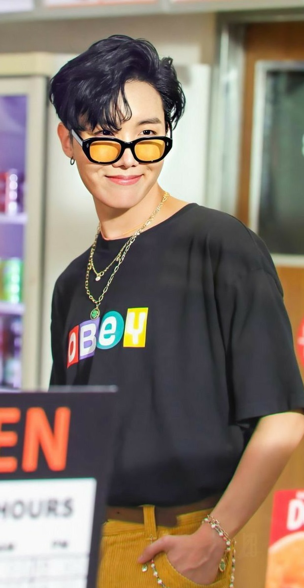

 Jung Ho-seok (Korean: 정호석; born February 18, 1994), better known by his stage name J-Hope (stylized as j-hope), is a South Korean rapper, songwriter, dancer, and record producer. In 2013, J-Hope made his debut as a member of South Korean boy band BTS, managed under Big Hit Entertainment. J-Hope released his first solo mixtape, Hope World, worldwide on March 1, 2018. The album was met with a positive reception. His debut at number 63 (and subsequent peak at number 38) made him the highest-charting solo Korean artist on the Billboard 200 at the time of the mixtape's release. On September 27, 2019, he released his song ”Chicken Noodle Soup” featuring Becky G. On October 12, 2019, the solo single debuted at No. 81 on US Billboard Hot 100, which made him the first member of BTS with a hot 100 hit under his own name.
1994–2012: Early life J-Hope was born as Jung Ho-seok (Korean: 정호석) on February 18, 1994, in Gwangju, South Korea, where he lived with his parents and older sister. Before debuting with BTS, he was part of the underground dance team Neuron and took dance classes at Gwangju Music Academy for six years, from 4th grade to his 1st year in high school, when he signed his contract with Big Hit Entertainment. J-Hope had been relatively well known for his skills in dance prior to his debut; he won various local prizes for dance, including placing first in a national dance competition in 2008. His skills in dance eventually led him to gain interest in singing, helping him to audition as an idol trainee. As a trainee, J-Hope was featured as a rapper in Jo Kwon's song "Animal", which was released in 2012.
2013–present: BTS and scheduled activities On June 13, 2013, J-Hope made his debut as a member of BTS on Mnet's M! Countdown with the track "No More Dream" from their debut single album 2 Cool 4 Skool. He was the third member to join the group as a trainee after RM and Suga. J-Hope has since been involved in the creation process of every album in BTS' discography. On June 14, 2019, J-Hope, together with fellow BTS member V, collaborated with Zara Larsson on a soundtrack called A Brand New Day for a mobile game BTS World.
2018–present: Solo activities and first mixtape On March 1, 2018, J-Hope released his first solo mixtape, Hope World, worldwide, along with a music video for the title track "Daydream". A music video for the B-side "Airplane" was later released on March 6. The mixtape debuted at number 63 and peaked at number 38 on the Billboard 200, making him the highest charting Korean solo act on the chart up to that point. Hope World also peaked at number 35 on the Canadian Albums chart, and number 19 on the US Top Rap Albums chart. Three mixtape tracks, "Daydream", "Hope World", and "Hangsang", charted on the World Digital Songs Chart, at number 3, 16, and 24 respectively. The following week, the tracks rose to number 1, 6, and 11, with three additional tracks off of Hope World, "Airplane", "Base Line", and "P.O.P (Piece of Peace) pt. 1" arriving on the chart at number 5, 6, and 12, respectively. "Daydream" peaking atop the chart made J-Hope one of only ten Korean groups, including his band BTS, to reach number one. The success of his solo debut lead him to rank at number 3 on the Emerging Artists Chart, and 97 on the Artist 100 Chart for the week of March 10, later peaking at number 91 for the week of March 17. He is the fifth Korean artist, and the second Korean soloist after Psy, to place on the Artist 100. The mixtape charted in ten countries worldwide, with "Daydream" charting in three. It was ranked at number 5 on Billboard magazine's year-end World Albums Chart.
His stage name, "J-Hope (제이홉)", comes from his desire to represent hope for fans, as well as to be "the hope of BTS." It is also a reference to the myth of Pandora's box, as after the box was opened and all the evils inside were released to the world, the only thing left was hope.
J-Hope has been described as having an upbeat and energetic tone to his music and performances. His mixtape, Hope World, was described as having a fun nature and variety of musical genres, including synth-pop, trap, house, alternative hip hop, funk-soul, and retro elements. Jeff Benjamin of Fuse wrote that the atmospheric style of "Blue Side", Hope World's outro track, "leaves the listener curious for what's coming next from J-Hope." The lyrical elements of the mixtape, notably the lead song "Daydream", was praised by Billboard magazine for its discussion of the difficulties an idol faces in their career, various literary references, and fun presentation of the serious subject matter. J-Hope cites the adventurous nature of Jules Verne's Twenty Thousand Leagues Under the Sea and the works of Kyle, Aminé, and Joey Badass as influencers on his style and work on Hope World. The idea of peace has also provided a basis for much of his lyrics, stating that "it'd be fantastic to become a part of someone's personal peace through my music" in an interview with Time magazine. The idea of "representing the modern generation" has also influenced his work on BTS' music. There was also a reference to Douglas Adams' science fiction series The Hitchhiker's Guide to the Galaxy. He released his first mixtape, Hope World, on March 1, a mixtape that "showcases exceptional creativity, genuine personality, and a cohesive sense of direction." In January 2020, J-Hope was promoted to a full member of the Korea Music Copyright Association.
On February 18, 2019, J-Hope donated 100 million Korean won (estimated $89,000 US dollars) to Child Fund Korea, in support of those attending his high school alma mater in Gwangju. He had previously donated 150 million won (roughly US$133,000) to the same organization in December 2018, but requested the donation be private at the time. On November 17, 2020, Child Fund Korea revealed that J-Hope donated another 100 million Korean won in support of children experiencing economic difficulties amid the COVID-19 pandemic.